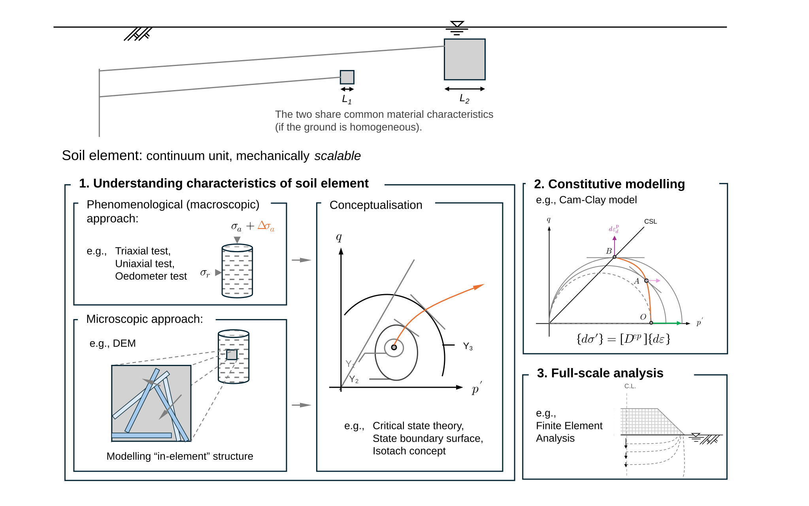

Ch1.1
Modelling of soil

Research in soil mechanics is layered into (1) understanding soil-element behaviour, (2) constitutive modelling, and (3) field equations for full-scale analyses (Fig. 1.1.1). Practical tools—consolidation time, flow nets, slip-circle stability, finite element analysis—are framed as boundary-value problems, yet this study emphasises the soil element so that laboratory-based constitutive models are used directly at ground scale.